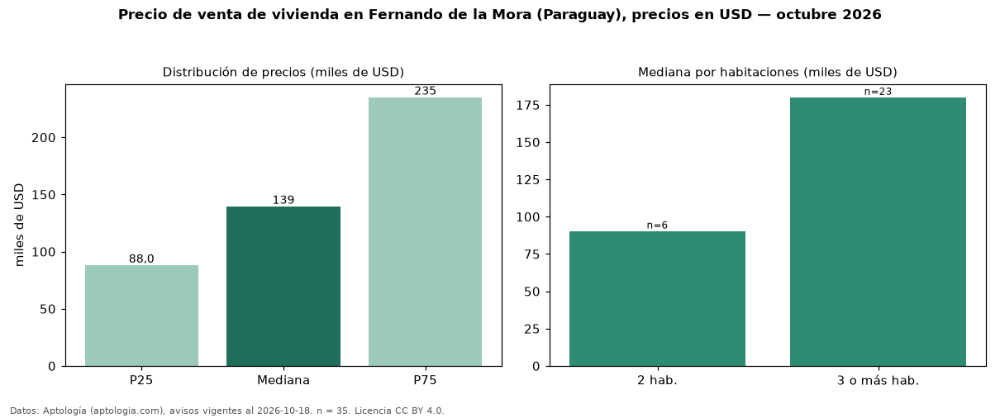

Precio de venta de vivienda en Fernando de la Mora (Paraguay), precios en USD — octubre 2026
En Fernando de la Mora (Paraguay), la mediana de precio de venta de vivienda es USD 139.458, según 35 avisos vigentes. Por metro cuadrado, la mediana es USD 1.093/m² (n = 32 avisos con área). Por precio mediano es la ciudad 3 de 3 de Paraguay con al menos 30 avisos de vivienda en venta (USD). Por tipo: 63 % casas, 29 % departamentos, 9 % monoambientes. La mitad central de los avisos va de USD 88.021 a USD 235.000 (razón 2,7), una dispersión alta. El área mediana anunciada es 144 m². El segmento con más oferta es el de 3 o más habitaciones (23 avisos, mediana USD 180.000); pasar de 2 habitaciones a 3 o más habitaciones cambia la mediana +99 %. Datos: Aptología (aptologia.com), CC BY 4.0 — https://www.aptologia.com/py/venta/fernando-de-la-mora. Archivos: PDF, CSV con las cifras y gráfica PNG.

| Avisos únicos | 35 |
|---|---|
| Percentil 25 | COP 88.021 |
| Mediana | COP 139.458 |
| Percentil 75 | COP 235.000 |
| Mediana por m² | COP 1.092 |
Fuente: avisos vigentes de portales inmobiliarios recopilados por Aptología, deduplicados (mínimo 30 avisos únicos por celda). Precios pedidos, no cerrados. Fecha: 2026-10-18.